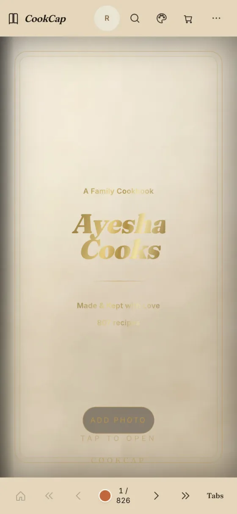
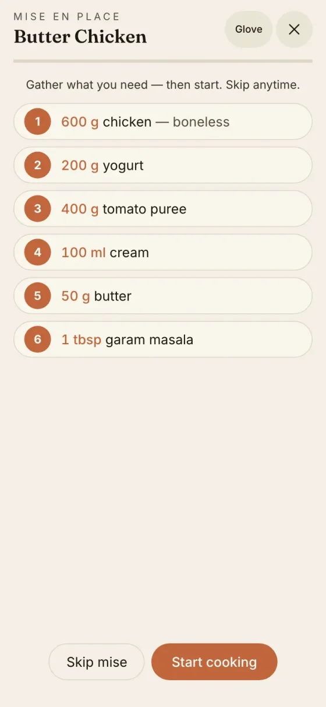

About CookCap
Families lose recipes to tabs, chats, and notebooks.
CookCap keeps an heirloom edition on a wooden table: a named hardcover, honest photos, cook mode, and a shopping list — offline-first.
The problem
Screenshots are not a cookbook.
- Recipes scatter across WhatsApp, browser tabs, and stained paper.
- Cooking UIs interrupt the page with dashboards and badges.
- Cloud recipe apps want accounts for a kitchen that should stay local.

The product
A calm, private family book.
- Book — cover, contents, chapters, paper tabs, page scrubber.
- Cook — start cooking, optional lenses (Plate, Mother, Budget, Ramadan…).
- Find & plan — smart search, shopping list, meal planner, pantry.
- Family — named edition, favorites, notes, guest PIN, merge backup.

By the numbers
Built to feel like paper.
790catalog recipes (local world table + editorial)
0accounts, ads or trackers
1hero photo per recipe
PWAinstalls offline on Home Screen
Principles
Book-first, Apple-grade chrome.
Reader is pure
Lenses never rewrite the default book. Badges and tracking stay optional.
HIG 3 tokens
Copper accent, glass page bar, 44pt targets, light cream paper and night paper dark.
Local-first
IndexedDB holds your edition. Export and merge when you move devices.
Roadmap
What’s next.
- Now — 3.7.8: HIG 3 chrome, offline shell that claims on activate, AA cover foil.
- Next — App Store packaging of the same PWA shell; marketing gallery refresh.
- Later — optional end-to-end-encrypted household sync (never required to cook).